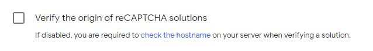

Blog post #4: CAPTCHA
Today's blog post has to do with CAPTCHAs. To start, I went to Google's recaptcha website.
I thought it might be helpful to get familiar with some of its implementations. For today's purposes, I did not validate the captcha with google's webserver.
I went to this site and registered a reCAPTCHA v2. This gave me a public/private key that would enable its usage on my website. Since I did not redirect my blogpost page to my domain name, I had to uncheck the following:
Once completed, I followed the instructions, and tried to enable the "I'm not a robot" checkbox captcha.
<script src='https://www.google.com/recaptcha/api.js' defer async></script>
<div class="g-recaptcha" data-sitekey="site key"></div>
With the above lines, I was able to apply the reCAPTCHA to the page. Next, I had to implement a way to see if the captcha was verified.
This page detailed on how I would accomplish this. Since I don't know
anything about PHP, I went with the following js:
grecaptcha.getResponse();
With this bit of JavaScript, all I had to do was add some type of event listener and verify that the response was valid.
Below, you will find the implementation.
CLICK THE CAPTCHA!
Looking through this gave me an idea of how to implement a captcha, but more importantly, it made me realize that there is a lot I don't know (PHP 😞).
- Kevin Shu, CS 347 section 1